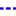

<!doctype html>
<html lang="en">
    <head>
        <meta charset="utf-8">
        <meta http-equiv="X-UA-Compatible" content="IE=edge">
        <meta name="viewport" content="initial-scale=1,user-scalable=no,maximum-scale=1,width=device-width">
        <meta name="mobile-web-app-capable" content="yes">
        <meta name="apple-mobile-web-app-capable" content="yes">
        <link rel="stylesheet" href="css/leaflet.css"><link rel="stylesheet" href="http://maxcdn.bootstrapcdn.com/font-awesome/4.6.1/css/font-awesome.min.css"><link rel="stylesheet" href="css/L.Control.Locate.min.css">
        <link rel="stylesheet" href="css/qgis2web.css">
        <link rel="stylesheet" href="css/leaflet-measure.css">
        <style>
        html, body, #map {
            width: 100%;
            height: 100%;
            padding: 0;
            margin: 0;
        }
        </style>
        <title></title>
    </head>
    <body>
        <div id="map">
        </div>
        <script src="js/qgis2web_expressions.js"></script>
        <script src="js/leaflet.js"></script><script src="js/L.Control.Locate.min.js"></script>
        <script src="js/multi-style-layer.js"></script>
        <script src="js/leaflet.rotatedMarker.js"></script>
        <script src="js/leaflet.pattern.js"></script>
        <script src="js/leaflet-hash.js"></script>
        <script src="js/Autolinker.min.js"></script>
        <script src="js/rbush.min.js"></script>
        <script src="js/labelgun.min.js"></script>
        <script src="js/labels.js"></script>
        <script src="js/leaflet-measure.js"></script>
        <script src="data/Fajasdeinventario_0.js"></script>
        <script src="data/Subparcelascirculares_1.js"></script>
        <script src="data/Conectoresentresubparcelas_2.js"></script>
        <script src="data/rboles_3.js"></script>
        <script>
        var map = L.map('map', {
            zoomControl:true, maxZoom:28, minZoom:1
        }).fitBounds([[-12.0870148809,-76.9493608065],[-12.0861616269,-76.948061556]]);
        var hash = new L.Hash(map);
        map.attributionControl.addAttribution('<a href="https://github.com/tomchadwin/qgis2web" target="_blank">qgis2web</a>');
        L.control.locate().addTo(map);
        var measureControl = new L.Control.Measure({
            primaryLengthUnit: 'meters',
            secondaryLengthUnit: 'kilometers',
            primaryAreaUnit: 'sqmeters',
            secondaryAreaUnit: 'hectares'
        });
        measureControl.addTo(map);
        var bounds_group = new L.featureGroup([]);
        var basemap0 = L.tileLayer('http://a.tile.stamen.com/toner/{z}/{x}/{y}.png', {
            attribution: 'Map tiles by <a href="http://stamen.com">Stamen Design</a>,<a href="http://creativecommons.org/licenses/by/3.0">CC BY 3.0</a> &mdash; Mapdata: &copy; <a href="http://openstreetmap.org">OpenStreetMap</a>contributors,<a href="http://creativecommons.org/licenses/by-sa/2.0/">CC-BY-SA</a>',
            maxZoom: 28
        });
        basemap0.addTo(map);
        var basemap1 = L.tileLayer('http://{s}.tile.openstreetmap.org/{z}/{x}/{y}.png', {
            attribution: '&copy; <a href="http://openstreetmap.org">OpenStreetMap</a> contributors,<a href="http://creativecommons.org/licenses/by-sa/2.0/">CC-BY-SA</a>',
            maxZoom: 28
        });
        basemap1.addTo(map);
        var basemap2 = L.tileLayer('http://a.tile.stamen.com/terrain/{z}/{x}/{y}.png', {
            attribution: 'Map tiles by <a href="http://stamen.com">Stamen Design</a>,<a href="http://creativecommons.org/licenses/by/3.0">CC BY 3.0</a> &mdash;Map data: &copy; <a href="http://openstreetmap.org">OpenStreetMap</a>contributors,<a href="http://creativecommons.org/licenses/by-sa/2.0/">CC-BY-SA</a>',
            maxZoom: 28
        });
        basemap2.addTo(map);
        var basemap3 = L.tileLayer('http://{s}.tile.thunderforest.com/landscape/{z}/{x}/{y}.png', {
            attribution: '&copy; <a href="http://www.opencyclemap.org">OpenCycleMap</a>,&copy; <a href="http://openstreetmap.org">OpenStreetMap</a> contributors,<a href="http://creativecommons.org/licenses/by-sa/2.0/">CC-BY-SA</a>',
            maxZoom: 28
        });
        basemap3.addTo(map);
        function setBounds() {
        }
        function pop_Fajasdeinventario_0(feature, layer) {
            var popupContent = '<table>\
                    <tr>\
                        <td colspan="2">' + (feature.properties['fid_'] !== null ? Autolinker.link(String(feature.properties['fid_'])) : '') + '</td>\
                    </tr>\
                    <tr>\
                        <td colspan="2">' + (feature.properties['perimetro_'] !== null ? Autolinker.link(String(feature.properties['perimetro_'])) : '') + '</td>\
                    </tr>\
                    <tr>\
                        <td colspan="2">' + (feature.properties['area_mc'] !== null ? Autolinker.link(String(feature.properties['area_mc'])) : '') + '</td>\
                    </tr>\
                </table>';
            layer.bindPopup(popupContent, {maxHeight: 400});
        }

        function style_Fajasdeinventario_0_0() {
            return {
                pane: 'pane_Fajasdeinventario_0',
                opacity: 1,
                color: 'rgba(155,155,155,1.0)',
                dashArray: '1,5',
                lineCap: 'butt',
                lineJoin: 'miter',
                weight: 3.0, 
                fill: true,
                fillOpacity: 1,
                fillColor: 'rgba(242,242,241,0.0)',
            }
        }
        map.createPane('pane_Fajasdeinventario_0');
        map.getPane('pane_Fajasdeinventario_0').style.zIndex = 400;
        map.getPane('pane_Fajasdeinventario_0').style['mix-blend-mode'] = 'normal';
        var layer_Fajasdeinventario_0 = new L.geoJson(json_Fajasdeinventario_0, {
            attribution: '<a href=""></a>',
            pane: 'pane_Fajasdeinventario_0',
            onEachFeature: pop_Fajasdeinventario_0,
            style: style_Fajasdeinventario_0_0,
        });
        bounds_group.addLayer(layer_Fajasdeinventario_0);
        map.addLayer(layer_Fajasdeinventario_0);
        function pop_Subparcelascirculares_1(feature, layer) {
            var popupContent = '<table>\
                    <tr>\
                        <td colspan="2">' + (feature.properties['unid_muest'] !== null ? Autolinker.link(String(feature.properties['unid_muest'])) : '') + '</td>\
                    </tr>\
                    <tr>\
                        <td colspan="2">' + (feature.properties['sub_parc'] !== null ? Autolinker.link(String(feature.properties['sub_parc'])) : '') + '</td>\
                    </tr>\
                    <tr>\
                        <td colspan="2">' + (feature.properties['faja'] !== null ? Autolinker.link(String(feature.properties['faja'])) : '') + '</td>\
                    </tr>\
                    <tr>\
                        <td colspan="2">' + (feature.properties['x_utm'] !== null ? Autolinker.link(String(feature.properties['x_utm'])) : '') + '</td>\
                    </tr>\
                    <tr>\
                        <td colspan="2">' + (feature.properties['y_utm'] !== null ? Autolinker.link(String(feature.properties['y_utm'])) : '') + '</td>\
                    </tr>\
                </table>';
            layer.bindPopup(popupContent, {maxHeight: 400});
        }

        function style_Subparcelascirculares_1_0() {
            return {
                pane: 'pane_Subparcelascirculares_1',
                opacity: 1,
                color: 'rgba(0,0,182,1.0)',
                dashArray: '',
                lineCap: 'butt',
                lineJoin: 'miter',
                weight: 2.0, 
                fill: true,
                fillOpacity: 1,
                fillColor: 'rgba(102,165,228,1.0)',
            }
        }
        map.createPane('pane_Subparcelascirculares_1');
        map.getPane('pane_Subparcelascirculares_1').style.zIndex = 401;
        map.getPane('pane_Subparcelascirculares_1').style['mix-blend-mode'] = 'normal';
        var layer_Subparcelascirculares_1 = new L.geoJson(json_Subparcelascirculares_1, {
            attribution: '<a href=""></a>',
            pane: 'pane_Subparcelascirculares_1',
            onEachFeature: pop_Subparcelascirculares_1,
            style: style_Subparcelascirculares_1_0,
        });
        bounds_group.addLayer(layer_Subparcelascirculares_1);
        map.addLayer(layer_Subparcelascirculares_1);
        function pop_Conectoresentresubparcelas_2(feature, layer) {
            var popupContent = '<table>\
                    <tr>\
                        <td colspan="2">' + (feature.properties['unid_muest'] !== null ? Autolinker.link(String(feature.properties['unid_muest'])) : '') + '</td>\
                    </tr>\
                    <tr>\
                        <td colspan="2">' + (feature.properties['faja'] !== null ? Autolinker.link(String(feature.properties['faja'])) : '') + '</td>\
                    </tr>\
                </table>';
            layer.bindPopup(popupContent, {maxHeight: 400});
        }

        function style_Conectoresentresubparcelas_2_0() {
            return {
                pane: 'pane_Conectoresentresubparcelas_2',
                opacity: 1,
                color: 'rgba(26,1,188,1.0)',
                dashArray: '1,5',
                lineCap: 'square',
                lineJoin: 'bevel',
                weight: 2.0,
                fillOpacity: 0,
            }
        }
        map.createPane('pane_Conectoresentresubparcelas_2');
        map.getPane('pane_Conectoresentresubparcelas_2').style.zIndex = 402;
        map.getPane('pane_Conectoresentresubparcelas_2').style['mix-blend-mode'] = 'normal';
        var layer_Conectoresentresubparcelas_2 = new L.geoJson(json_Conectoresentresubparcelas_2, {
            attribution: '<a href=""></a>',
            pane: 'pane_Conectoresentresubparcelas_2',
            onEachFeature: pop_Conectoresentresubparcelas_2,
            style: style_Conectoresentresubparcelas_2_0,
        });
        bounds_group.addLayer(layer_Conectoresentresubparcelas_2);
        map.addLayer(layer_Conectoresentresubparcelas_2);
        function pop_rboles_3(feature, layer) {
            var popupContent = '<table>\
                    <tr>\
                        <td colspan="2">' + (feature.properties['nom_com'] !== null ? Autolinker.link(String(feature.properties['nom_com'])) : '') + '</td>\
                    </tr>\
                    <tr>\
                        <td colspan="2">' + (feature.properties['nom_cient'] !== null ? Autolinker.link(String(feature.properties['nom_cient'])) : '') + '</td>\
                    </tr>\
                    <tr>\
                        <td colspan="2">' + (feature.properties['dmayor_cm'] !== null ? Autolinker.link(String(feature.properties['dmayor_cm'])) : '') + '</td>\
                    </tr>\
                    <tr>\
                        <td colspan="2">' + (feature.properties['dmenor_cm'] !== null ? Autolinker.link(String(feature.properties['dmenor_cm'])) : '') + '</td>\
                    </tr>\
                    <tr>\
                        <td colspan="2">' + (feature.properties['hfuste_m'] !== null ? Autolinker.link(String(feature.properties['hfuste_m'])) : '') + '</td>\
                    </tr>\
                    <tr>\
                        <td colspan="2">' + (feature.properties['htotal_m'] !== null ? Autolinker.link(String(feature.properties['htotal_m'])) : '') + '</td>\
                    </tr>\
                    <tr>\
                        <td colspan="2">' + (feature.properties['estad_fit'] !== null ? Autolinker.link(String(feature.properties['estad_fit'])) : '') + '</td>\
                    </tr>\
                    <tr>\
                        <td colspan="2">' + (feature.properties['num_arb'] !== null ? Autolinker.link(String(feature.properties['num_arb'])) : '') + '</td>\
                    </tr>\
                    <tr>\
                        <td colspan="2">' + (feature.properties['cod_arb'] !== null ? Autolinker.link(String(feature.properties['cod_arb'])) : '') + '</td>\
                    </tr>\
                    <tr>\
                        <td colspan="2">' + (feature.properties['obs'] !== null ? Autolinker.link(String(feature.properties['obs'])) : '') + '</td>\
                    </tr>\
                    <tr>\
                        <td colspan="2">' + (feature.properties['x_utm'] !== null ? Autolinker.link(String(feature.properties['x_utm'])) : '') + '</td>\
                    </tr>\
                    <tr>\
                        <td colspan="2">' + (feature.properties['y_utm'] !== null ? Autolinker.link(String(feature.properties['y_utm'])) : '') + '</td>\
                    </tr>\
                </table>';
            layer.bindPopup(popupContent, {maxHeight: 400});
        }

        function style_rboles_3_0() {
            return {
                pane: 'pane_rboles_3',
                radius: 6.0,
                opacity: 1,
                color: 'rgba(255,0,0,0.0)',
                dashArray: '',
                lineCap: 'butt',
                lineJoin: 'miter',
                weight: 1,
                fill: true,
                fillOpacity: 1,
                fillColor: 'rgba(224,43,103,1.0)',
            }
        }
        function style_rboles_3_1() {
            return {
                pane: 'pane_rboles_3',
                radius: 3.0,
                opacity: 1,
                color: 'rgba(0,0,0,0.0)',
                dashArray: '',
                lineCap: 'butt',
                lineJoin: 'miter',
                weight: 1,
                fill: true,
                fillOpacity: 1,
                fillColor: 'rgba(251,143,165,1.0)',
            }
        }
        map.createPane('pane_rboles_3');
        map.getPane('pane_rboles_3').style.zIndex = 403;
        map.getPane('pane_rboles_3').style['mix-blend-mode'] = 'normal';
        var layer_rboles_3 = new L.geoJson.multiStyle(json_rboles_3, {
            attribution: '<a href=""></a>',
            pane: 'pane_rboles_3',
            onEachFeature: pop_rboles_3,
            pointToLayers: [function (feature, latlng) {
                var context = {
                    feature: feature,
                    variables: {}
                };
                return L.circleMarker(latlng, style_rboles_3_0(feature));
            },function (feature, latlng) {
                var context = {
                    feature: feature,
                    variables: {}
                };
                return L.circleMarker(latlng, style_rboles_3_1(feature));
            },
        ]});
        bounds_group.addLayer(layer_rboles_3);
        map.addLayer(layer_rboles_3);
        var baseMaps = {'Stamen Toner': basemap0, 'OSM': basemap1, 'Stamen Terrain': basemap2, 'Thunderforest Landscape': basemap3};
        L.control.layers(baseMaps,{' Árboles': layer_rboles_3,' Conectores entre subparcelas': layer_Conectoresentresubparcelas_2,' Subparcelas circulares': layer_Subparcelascirculares_1,' Fajas de inventario': layer_Fajasdeinventario_0,}).addTo(map);
        setBounds();
        </script>
    </body>
</html>
